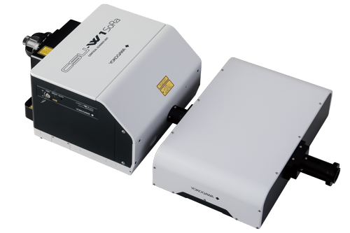

Nico Stuurman, 2020-06-04
Micro-Manager related activities

- Daily support sessions: image.sc
- Improve stability and speed
- Release 2.0, imminent!
- Move website (ongoing, next month?)
- Submitted CZI grant - Kevin Eliceiri PI
Micro-Manager related activities
Automated FRAP screen

Jess Sheu-Gruttadauria

Xiaowei Yan
Screening using FRAP
Issues:
Long-term stability
- Fixed many memory leaks
- Bleaching no longer posts "alerts"
Weill Innovation Core
Weill Innovation Core



SoYeon Kim
Weill Innovation Core obstacles
That was all!
Kara McKinley